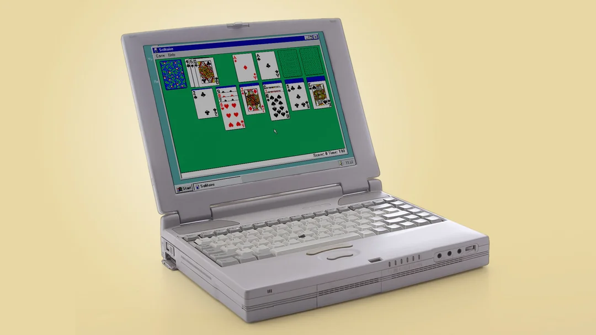

Household Internet Wasn't Common Before the Mid-90s
(Truly a scary time!)

Did you know the offical birthday of the Internet is January 1st, 1983? Even though it came into existence then, it didn't gain the popularity we know now until at least at least a decade later, when it became more common to have home computers and home computers with an internet connection
In the year 2000, only 50% of US Adults said they used the internet, and less than 5% of homes had high speed internet access. That means a lot of things we found common place couldn't be done yet! (And without high speed internet, you had to listen to a scary sound to get online.)